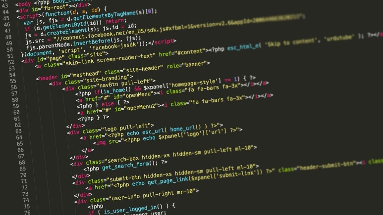

프로그래밍 관련 언어

- Compiler 컴파일러
- 프로그래밍 언어로 작성한 코드들을 컴퓨터가 이해하는 기계어로 변환해 주는 것
- 렌더링(Rendering)
- 논리적인 문서의 표현식을 그래픽 표현식으로 변형시키는 과정
- SandBox
- 외부로부터 받은 파일을 바로 실행하지 않고 보호된 영역에서 실행시켜 봄으로써 외부로부터 들어오는
파일과 프로그램이 내부 시스템에 악영향을 주는 것을 미연에 방지하는 기술
- CI (Continuous Integration)
- 개발자가 각각 개발한 소스코드를 모아서 한번에 빌드하는 통합 빌드의 과정을 특정 시점이 아니라
주기적으로 수행함으로써 통합에서 발생하는 오류를 사전에 해결하고, 이러한 과정들에 소요되는 시간을 줄이기 위한 기법
- ping
- icmp프로토콜을 이용하여 명령어에 지정한 주소로 응답요청을 보내고 그 응답을 받아 네트워크 상태를 파악하게 하는 명령어